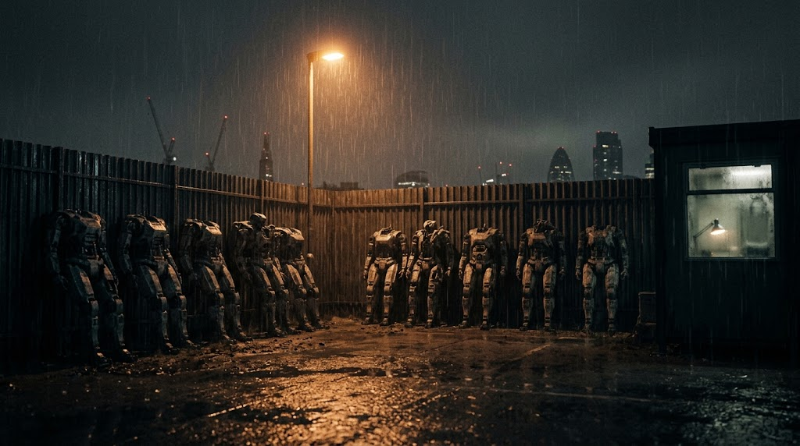
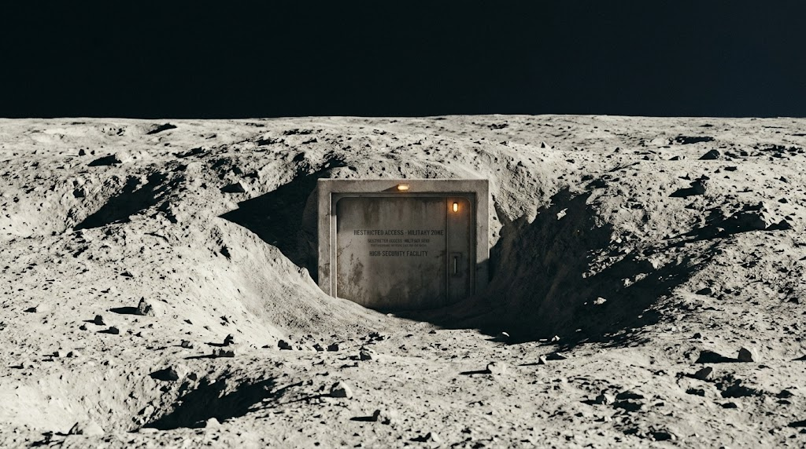
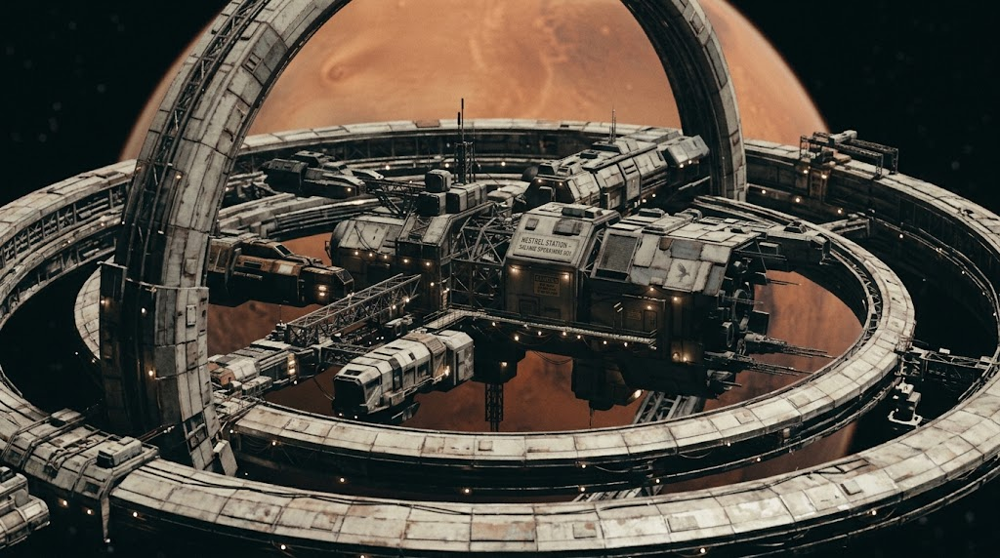
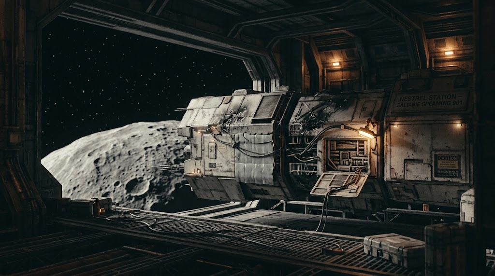

The World of Concordance
A future built on distance — and on the technology that got rid of it. An introduction to how Concordance works, who controls it, and the corner of the Solar System where Return Incomplete and What Remains take place.
Distance, Rewired
Concordance didn't shrink the Solar System. It did something stranger: it made where you are almost beside the point.
At the centre of it are matched cores — unique paired devices manufactured, at scale, in exactly one place in human civilisation. Wherever the two halves of a pair end up, they stay connected, instantly, across any distance. No signal crosses the gap between them. Nothing physically travels. And yet a person on one side can act, in real time, through a body waiting on the other.
That body is a Frame: anything from a purpose-built military platform to a piece of industrial salvage equipment, wired to receive a human mind and let it act as though it were home. The person doing the acting is a Vector. Their own biological body — the native body — stays behind on an anchor, tended and monitored, while their attention does the travelling instead.
It sounds, put that way, like a solved problem: send the person who matters, not the ship that would otherwise have to carry them. What Concordance doesn't solve is what happens to a mind asked to live, sometimes for years, somewhere its body has never been. Frames fail. Connections get cut, sometimes on purpose. And the self that comes home afterward isn't always in perfect agreement with the one that left. Thomas Rook found that out the hard way, a decade before Return Incomplete opens.
For the precise terminology — Frame, Vector, primary, hard return, severance and the rest — see the glossary.
A body can be sent anywhere. A self doesn't always agree to come along.
Concordance is sold, publicly, as connection without limit. The people who actually use it — soldiers, salvagers, the recovery specialists who repossess a Frame nobody's paying for any more — know it as something closer to a debt. Every distance it closes gets settled somewhere.
Who Answers To Whom
Concordance didn't just change what a body could do. It changed who was worth becoming one on behalf of — and that question has an owner.
The Crown got there first. Britain's original remote-manoeuvre soldiers — the Cinders, formally CNDR — fought wars through Frames stationed millions of kilometres from home, under a chain of command that still thinks of itself as straightforwardly military. Thomas Rook was one of them. The programme that replaced his generation, the Successors, was built to be steadier, safer and considerably less like him.
Praxian Systems is what happens when the same technology stops being a strictly government concern. A transnational commercial power with a hand in freight, underwriting, Concordance certification and continuity medicine, Praxian also keeps an armed expeditionary branch that answers to no government at all — which, for a company built around owning bodies, credentials and continuity records, is very much the point.
Common Dawn is the argument that all of this was a mistake from the start: that Concordance has made ordinary people permanently dependent on infrastructure they will never be allowed to own, and that reform within the system is a polite way of changing nothing. Its methods are not endorsed by anyone in this story. Its diagnosis is harder to dismiss than anyone in power would like.
And above all of it sits Titan, sometimes called Crown Meridian — a distant, small, industrial power that holds something close to a monopoly on manufacturing the matched cores the entire system depends on. Everyone else's sovereignty is, in the end, a lease.
A Solar System Getting Smaller
Concordance made the distances instant. The places themselves are still stubbornly real.




London is where Thomas Rook makes his living at the start of Return Incomplete, repossessing Frames for people who've stopped paying for them — a quiet, unglamorous trade for a man with a considerably less quiet past.
Hidden, decommissioned corners of the Moon hold pieces of that past: old military infrastructure, buried operations, and at least one erased chapter of Rook's service that was never supposed to surface again.
Kestrel Station, in high orbit around Mars, is Ada Mercer's home — a working salvage economy built by people who fix what the rest of the system throws away, family business and all.
Out in the Belt, around Vesta, the crew finds something closer to a breathing space: repair, routine and the kind of ordinary life that's harder to come by than the technology that makes it possible to live almost anywhere at all.
This is the introduction. The glossary covers the vocabulary in detail; further pages on the factions, the technology and the shape of the wider Concordance universe are planned as the next book takes shape.